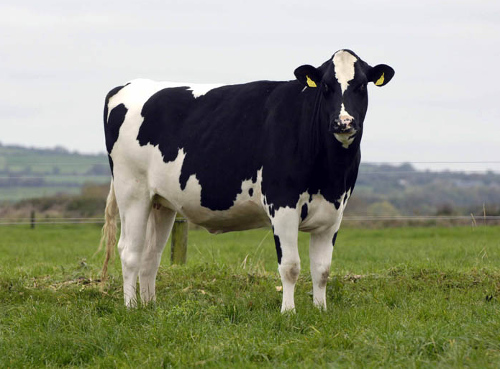

The End of the World is Cancelled

In my previous posts, I talked about the importance of us as a country getting involved in the Commonwealth countries. Luckily we have an opening. The Commonwealth countries are still there and they want to work with us, with a bit of humility, the former masters can become the servants. There is a lot of goods, services and expertise we can provide to help the continued development of their countries.
My main point throughout my Brexit posts is that I do not believe that having a bilateral trade arrangement with EU rather than being a member is Armageddon.
Indeed, when we are finally free of the stifling customs union, we can really target improved relations with the rest of the world. Especially the Commonwealth which is now 2.3 billion people and most of world growth, as well as the United States and anyone else who wants to come with us in global free but fair trade.
We have all the cards
There is a lot of bluster from the EU, but that is for domestic consumption and deflect from the fact that national leaders in the EU Council of Ministers thought it could ignore British’s demands for reforms and the British people wouldn’t call its bluff. It did and now we have to move on. There is no going back.
On almost every issue, the EU needs UK more than UK needs the EU.
A nation of shopkeepers

European nations and companies rely on finance from the city of London and they sell to us a lot more than we sell to them.
If the EU does not give tariff free access to the EU, the UK will retaliate in kind. The EU has already lost a lot of jobs due to putting sanctions on Russia, many areas of Europe will be equally badly hit if this happens.
Meanwhile, we have a free floating currency, we can win any tariff war by devaluing the pound. The Bank of England can buy back government debt through quantitative easing. Our exports become cheaper, removing the effect of the EU’s tariff, the government has less debt and domestic production becomes more competitive. Triple win.
Meanwhile, outside the customs union, we can substitute almost any EU product with far cheaper global imports. South African or Australian wine might not initially have the same brand power as French wine but it still gets you drunk, and fashion is not a one way street, they can also move to meet the circumstances.
A nation of ships
UK is the main military power of Europe. European leaders know if they anger the British public so much that defending EU countries becomes politically impossible, then how will it defend itself from Putin’s next adventure?
Meanwhile The EU does not have the money to create an equivalent force and it takes a long time to make the martial culture required to be effective. In Afghanistan, the German troops refused to leave base without British guards. Putin’s men have no such scruples.
A nation of immigrants
Ignoring the Irish people who are unaffected by Brexit due to pre-existing and ancient rights, there are three million great and mostly young people working in Britain from other EU countries. It is going up not down since Brexit. Due to the relative economic strength of the UK.
Those from Eastern Europe send remittances back to their families which is spent in local shops, this is quite important to the economy of many Eastern Europe countries.
Whereas the largest proportion of the one million British people in Europe are retired people in the Sun. On the whole, these seniors don’t need working rights, they don’t take the jobs, they just shop, eat and drink, providing essential extra income into otherwise quite fragile seaside areas.
We can offer whatever terms we want or don’t want. It doesn’t matter, the EU will have to accept them.
The EU deals with both trade and immigration so with Brexit it is all mixed up, however normally immigration shouldn’t actually have that much to do with a trade deal.
We haven’t sent people back to Europe since we beat the viking horde, we won’t start again now. We never had much immigration control against Europeans, I doubt anyone will notice that much of a difference after Brexit. Whatever tests we set (getting to that in a just a second), most people who want to come here will pass them.
The UK government always makes a meaningless immigration target, but that is not important. If we engage more with the 84% of the world that we have been mostly ignoring, then the booming economy will need more labour.
What people want is control. Post-Brexit immigration system needs to have the following features:
- Vet and interview people coming from terrorist hotspots so we don’t take in any more terrorists. Throw out existing known terrorists.
- Pick the best and brightest people we can find from the whole world.
- Treat everyone equally, i.e. don’t discriminate based on race, more on that in a future post.
Once immigration has a defensible system, it will stop being a political football and people will stop worrying about it.
It will all be fine
Since we joined the EU, we outsourced most of the important decisions to Brussels but the employee count of Whitehall and the rest of the British government did not get smaller, it just kept increasing. So over 30 years this increasingly pointless, bloated and atrophied class of bureaucrats is used to being told what to do.
Now these bureaucrats are panicking because finally they have to take some responsibility and do some work. Like an unused muscle it is providing resistance and some of it might be dead weight.
If I was a government department I would be showing how useful I am to the process of creating new UK systems. Obstructions might find themselves being worked around and replaced.
Assuming the government can provide leadership and overcome this addiction to sloth, Brexit is going to be fine.
It is interesting how the government created a new department for Brexit and a new department for International Trade. A new broom can clean best.
A full Brexit will finally lance the boil of frustration over Europe and allow us all to get on with things. As I said before in my post “Good fences make good neighbours”, Britain will go from being an unhappy tenant of the EU to Europe’s most supportive neighbour and ally.
We will get a workable free trade deal. The rest of Europe will get over it, indeed Britain never joined the Euro, Schengen, Fiscal Compact and dozens of other things, so in a decade, people in Europe will have forgotten that the UK was ever a member.
No such luck with our own domestic moaners, they will go on for a generation. More on that later.